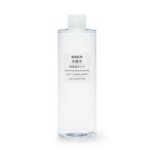
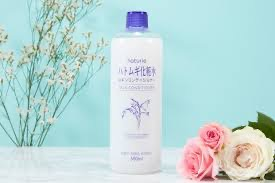
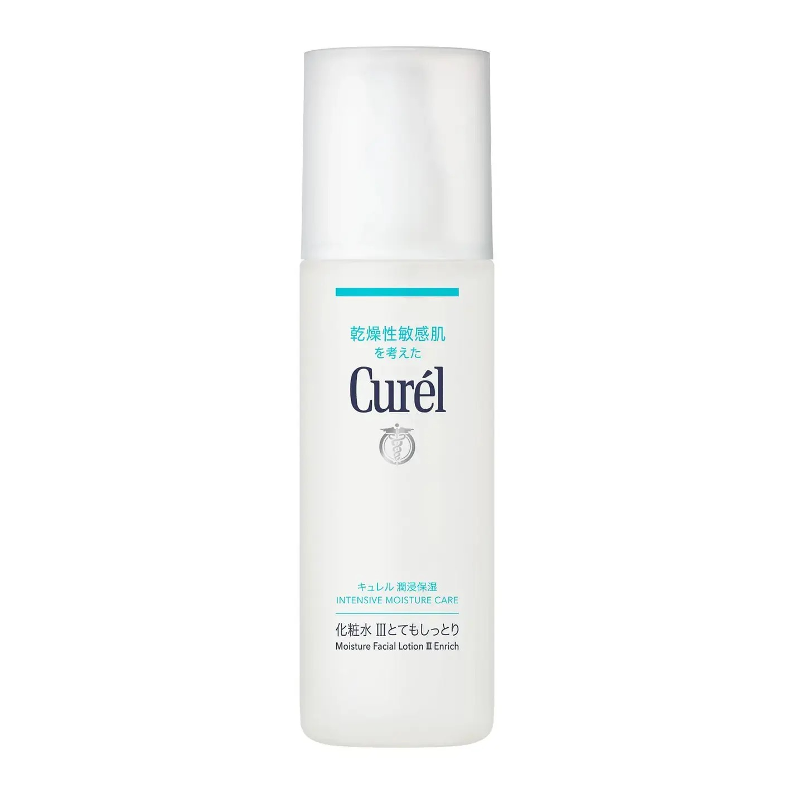
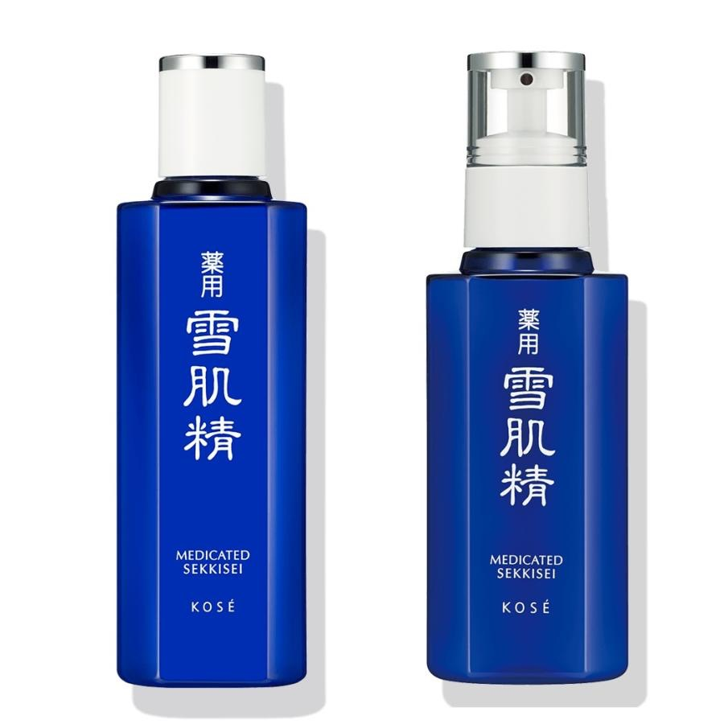
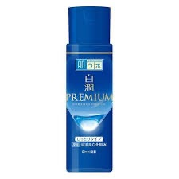

<!DOCTYPE html>
<html>
<head>
  <meta charset="UTF-8">
  <title>人気化粧水ランキング２０２６年</title>
  <link rel="stylesheet" href="style.css">
</head>
<body>


  

</body>
</html>
<h1 class="midasi">小倉陸翔が使う化粧水人気ランキングTOP5<h1>


 


<p class="bun0">化粧水を使うことは、ただ顔をぬらすことではない。
それは、今日一日がんばった肌を、やさしく元の状態に戻してあげる行為だと思う。

私たちの肌は、毎日、紫外線やほこり、乾いた空気にさらされている。
洗顔をすると汚れは落ちるが、その代わりに、肌を守っていたうるおいまで一緒に流れてしまう。
そのまま何もしなければ、肌は「水が足りない」と勘違いし、皮脂を出しすぎたり、荒れたりしてしまう。

そこで化粧水の出番になる。
化粧水は、乾いた肌に水分を与え、ほっと一息つかせる役割を持っている。
砂漠に雨が降るように、化粧水がしみ込むことで、肌はやわらかさと落ち着きを取り戻す。

そして、うるおった肌は、その後に使う乳液やクリームの力をしっかり受け取れるようになる。
化粧水は、スキンケアの土台を整える、大切な準備なのだ。

だから化粧水を使うことは、
「自分の肌を大切に扱っています」という小さな合図でもある。
ほんの数十秒のケアが、未来の肌を守ってくれる。
それが、化粧水を使う本当の意味だと思う。化粧水って、ただ「肌を濡らす水」だと思われがちだけど、実際は肌の調子を土台から整える役目を持ってる。

洗顔したあとの肌は、汚れだけじゃなくて必要なうるおいまで一緒に失っている状態。このままだと、肌は「乾いてる！」と判断して、余計な皮脂を出したり、カサついたりしてトラブルを起こす。化粧水はそこで、水分を補給して「もう大丈夫だよ」と肌に伝える役割をする。

化粧水で水分が入ると、角質（肌の一番外側）がふっくらして、キメが整い、毛穴も目立ちにくくなる。さらに、そのあとに使う乳液やクリームの浸透も良くなる。つまり、化粧水はスキンケアの「下地」みたいなもの。

もう一つ大きいのは、肌のバリア機能を守ること。乾燥した肌は外からの刺激に弱く、ニキビ・赤み・かゆみが出やすくなる。化粧水で水分を与えることで、肌は外部ダメージから自分を守れるようになる。

簡単に言うと、
化粧水は「肌を潤す」だけじゃなく、
肌を安定させ、トラブルを防ぎ、きれいに見せる土台を作るもの。

毎日少しの水分を入れるだけで、肌の未来が変わる。
それが化粧水を使う一番のメリット。<P>


<h1 class="text1">第1位無印良品<h1>




<p class="bun1">無印良品 敏感肌用化粧水 高保湿 300mL
	•	口コミ多数＆高評価の定番保湿化粧水
	•	しっかりうるおいをキープしたい人向け
	•	毎日たっぷり使える大容量タイプ
　　　　　無印良品 敏感肌用 化粧水 高保湿 300mL
✔ 敏感肌向けの高保湿タイプ
✔ 刺激少なめ・しっかりうるおう
✔ 口コミ評価高め（多くの人が「安いのに良い」と評価） 

無印良品 敏感肌用 化粧水 さっぱり 300mL
✔ さっぱりタイプでべたつきにくい
✔ オイリー肌や夏にも使いやすいタイプ
✔ 大容量でコスパよし（口コミでも人気） 

無印良品 敏感肌用 化粧水 しっとり 300mL
✔ しっとりめで柔らかい使用感
✔ 敏感肌でも使いやすい成分設計で安心感が高い

⸻

✨ 目的別・スペシャル系

無印良品 エイジングケア化粧水 300mL
→ 年齢肌ケアを意識したタイプ（保湿＋ハリ感）

無印良品 ふき取り化粧水 300mL
→ 古い角質や汚れをふき取りながら整える化粧水

無印良品 薬用リンクルブライト化粧水 300mL
→ 医薬部外品（しわ・明るさケア）タイプ

⸻

🧴 無印化粧水が人気な理由

✔ 無香料・無着色・アルコールフリーで肌にやさしい設計（敏感肌にも使いやすい） 
✔ さっぱり〜高保湿まで肌タイプに合う種類がある 
✔ 価格が手頃で継続しやすい（口コミでも評価高い） 

⸻

🧠 選び方のポイント
	•	🌿 油っぽい・夏向け → さっぱりタイプ
	•	💧 乾燥が気になる → 高保湿・しっとりタイプ
	•	若々しさを意識したい → エイジングケア・薬用系<p>
<a href=<a href=<table cellpadding="0" cellspacing="0" border="0" style=" border:1px solid #ccc; width:300px;"><tbody><tr style="border-style:none;"><td style="vertical-align:top; border-style:none; padding:10px; width:44px;"><a href="https://rpx.a8.net/svt/ejp?a8mat=3ZFQAH+GB1F8Y+2HOM+BWGDT&rakuten=y&a8ejpredirect=https%3A%2F%2Fhb.afl.rakuten.co.jp%2Fhgc%2Fg00tpdh4.2bo1196b.g00tpdh4.2bo12d80%2Fa24091903454_3ZFQAH_GB1F8Y_2HOM_BWGDT%3Fpc%3Dhttps%253A%252F%252Fitem.rakuten.co.jp%252Fmujirushi-ryohin%252F4548076448341%252F%26amp%3Bm%3Dhttp%253A%252F%252Fm.rakuten.co.jp%252Fmujirushi-ryohin%252Fi%252F10001152%252F%26amp%3Brafcid%3Dwsc_i_is_33f72da33714639c415e592c9633ecd7" rel="nofollow"></a></td><td style="font-size:12px; vertical-align:middle; border-style:none; padding:10px;"><p style="padding:0; margin:0;"><a href="https://rpx.a8.net/svt/ejp?a8mat=3ZFQAH+GB1F8Y+2HOM+BWGDT&rakuten=y&a8ejpredirect=https%3A%2F%2Fhb.afl.rakuten.co.jp%2Fhgc%2Fg00tpdh4.2bo1196b.g00tpdh4.2bo12d80%2Fa24091903454_3ZFQAH_GB1F8Y_2HOM_BWGDT%3Fpc%3Dhttps%253A%252F%252Fitem.rakuten.co.jp%252Fmujirushi-ryohin%252F4548076448341%252F%26amp%3Bm%3Dhttp%253A%252F%252Fm.rakuten.co.jp%252Fmujirushi-ryohin%252Fi%252F10001152%252F%26amp%3Brafcid%3Dwsc_i_is_33f72da33714639c415e592c9633ecd7" rel="nofollow">化粧水・敏感肌用・高保湿タイプ（大容量）400ml【無印良品 公式】</a></p><p style="color:#666; margin-top:5px line-height:1.5;">価格:<span style="font-size:14px; color:#C00; font-weight:bold;">1190円</span><br/><span style="font-size:10px; font-weight:normal;">(2026/1/12 14:08時点)</span><br/><span style="font-weight:bold;">感想(145件)</span></p></td></tr></tbody></table>
>
  

<h1 class="text2">第2位ハトムギ化粧水<h1>




<p class="bun2">	•	日本でも圧倒的人気の化粧水✨
	•	さっぱりした使い心地で、保湿・肌の整えに強い
	•	顔・にも使える大容量でコスパ抜群人気の ハトムギ化粧水（Hatomugi Lotion） は、プチプラでたっぷり使える日常用化粧水の代表格。
顔にも体にも使える大容量タイプが多く、毎日の保湿・肌コンディション整えにぴったりです。Naturie ハトムギ化粧水 500ml
	•	プチプラの定番！500mlの大容量で顔〜全身まで使える
	•	軽い水のような質感でべたつかず、肌に馴染みやすい

麗白 ハトムギ化粧水 1000ml / 麗白 ハトムギ化粧水 大容量 1L
	•	コスパ最強！1Lサイズで惜しみなく毎日使える
	•	肌をやわらかく整える保湿タイプ

プラチナレーベル ハトムギ化粧水 / ドウシシャ プラチナレーベル ハトムギ化粧水 1000mL
	•	こちらも人気のハトムギ化粧水
	•	顔・体用どちらもOKで毎日使いやすい

発酵熟成 ハトムギ化粧水 200ml
	•	発酵タイプでうるおい※重視
	•	香料控えめで敏感肌にも◎

⸻

🧴 ハトムギ化粧水の特徴・効果

✔ ハトムギ（ヨクイニン＝コイクセミー種子）エキスで肌をしっとり保湿・整える 
✔ さっぱりした使い心地でべたつかず、毎日たっぷり使える 
✔ コットンにたっぷり含ませてパックにする人も多い（保湿UP） 
✔ 顔だけでなく体の乾燥ケアにも使えるタイプ多数 

⸻

🧠 どんな人に合う？

✅ 初めて化粧水を使う人
✅ 脂性肌〜混合肌の人
✅ べたつかないさっぱり保湿が好き
✅ 顔だけでなく全身にも使いたい
✅ 大容量・コスパ重視

⸻

🧴 使い方のコツ

✨ 普段の化粧水として普通に塗る
✨ コットンに浸して ローションパック（3〜5分）すると保湿力UP
✨ 入浴後に体全体に塗ると乾燥予防に<p>

<a href=<table cellpadding="0" cellspacing="0" border="0" style=" border:1px solid #ccc; width:300px;"><tbody><tr style="border-style:none;"><td style="vertical-align:top; border-style:none; padding:10px; width:44px;"><a href="https://rpx.a8.net/svt/ejp?a8mat=3ZFQAH+GB1F8Y+2HOM+BWGDT&rakuten=y&a8ejpredirect=https%3A%2F%2Fhb.afl.rakuten.co.jp%2Fhgc%2Fg00r1364.2bo113ce.g00r1364.2bo12c5e%2Fa24091903454_3ZFQAH_GB1F8Y_2HOM_BWGDT%3Fpc%3Dhttps%253A%252F%252Fitem.rakuten.co.jp%252Frakuten24%252F4903335693601%252F%26amp%3Bm%3Dhttp%253A%252F%252Fm.rakuten.co.jp%252Frakuten24%252Fi%252F11159405%252F%26amp%3Brafcid%3Dwsc_i_is_33f72da33714639c415e592c9633ecd7" rel="nofollow"></a></td><td style="font-size:12px; vertical-align:middle; border-style:none; padding:10px;"><p style="padding:0; margin:0;"><a href="https://rpx.a8.net/svt/ejp?a8mat=3ZFQAH+GB1F8Y+2HOM+BWGDT&rakuten=y&a8ejpredirect=https%3A%2F%2Fhb.afl.rakuten.co.jp%2Fhgc%2Fg00r1364.2bo113ce.g00r1364.2bo12c5e%2Fa24091903454_3ZFQAH_GB1F8Y_2HOM_BWGDT%3Fpc%3Dhttps%253A%252F%252Fitem.rakuten.co.jp%252Frakuten24%252F4903335693601%252F%26amp%3Bm%3Dhttp%253A%252F%252Fm.rakuten.co.jp%252Frakuten24%252Fi%252F11159405%252F%26amp%3Brafcid%3Dwsc_i_is_33f72da33714639c415e592c9633ecd7" rel="nofollow">ナチュリエ スキンコンディショナーR ハトムギ化粧水(500ml)【ナチュリエ】[化粧水 スキンケア さっぱり 保湿 潤い プチプラ]</a></p><p style="color:#666; margin-top:5px line-height:1.5;">価格:<span style="font-size:14px; color:#C00; font-weight:bold;">799円</span><br/><span style="font-size:10px; font-weight:normal;">(2026/1/12 14:13時点)</span><br/><span style="font-weight:bold;">感想(23件)</span></p></td></tr></tbody></table>
</a>
<h1 class="text3">第3位キュレル 化粧水<h1>





<p class="bun3">•	乾燥・敏感肌向けの人気処方
		肌荒れしにくいシンプル設計	•	キュレル 化粧水 III 150ml: 「とてもしっとり」タイプ。乾燥が気になる人に人気の高保湿モデル。
	•	キュレル 化粧水 II 150ml: 「しっとり系」。べたつきすぎず、うるおいはしっかり。
	•	キュレル 皮脂トラブルケア 化粧水 150ml: 皮脂・ベタつきが気になる肌向け。敏感肌でも使える。

⸻

💧 種類・目的別
	•	キュレル エイジングケアシリーズ 化粧水 140ml
→ 乾燥によるハリ不足・年齢サインをケアしたい人向け。
	•	キュレル ローション 220ml
→ たっぷり使える大容量タイプ。顔だけでなく首〜デコルテにもぴったり。
	•	花王 キュレル シミ・ソバカス予防ケア化粧水3 140ml
→ 保湿にプラスして「シミ・ソバカス予防ケア」も意識したい人向け。

⸻

🧠 キュレル化粧水が人気な理由

✔ 敏感肌にやさしい処方
香料・着色料・アルコール無添加で肌刺激を抑える設計。 

✔ セラミドケアでうるおい長持ち
セラミドに着目したブランドで、乾燥や刺激から肌を守りやすい。 

✔ タイプが選べる
さっぱり〜しっとり〜高保湿まで肌の状態に合わせて選べる。 

⸻

🧴 どう選ぶ？
	•	普段の乾燥対策に: II または III
	•	皮脂が気になる季節: 皮脂トラブルケア
	•	年齢サイン（ハリ）も気になる: エイジングケア
	•	とにかくたっぷり使いたい: 大容量ローション

⸻

💡 ちょい豆知識

キュレルの化粧水は「ローション」と呼ばれることが多く、
角質層まで水分を届け、バリア機能を整えるのがポイント。敏感肌・乾燥肌の人から長く支持されています。<p> 

<table cellpadding="0" cellspacing="0" border="0" style=" border:1px solid #ccc; width:300px;"><tbody><tr style="border-style:none;"><td style="vertical-align:top; border-style:none; padding:10px; width:44px;"><a href="https://rpx.a8.net/svt/ejp?a8mat=3ZFQAH+GB1F8Y+2HOM+BWGDT&rakuten=y&a8ejpredirect=https%3A%2F%2Fhb.afl.rakuten.co.jp%2Fhgc%2Fg00ufau4.2bo1188b.g00ufau4.2bo12a17%2Fa24091903454_3ZFQAH_GB1F8Y_2HOM_BWGDT%3Fpc%3Dhttps%253A%252F%252Fitem.rakuten.co.jp%252Frakuten24-cosmetics%252F4901301411464%252F%26amp%3Bm%3Dhttp%253A%252F%252Fm.rakuten.co.jp%252Frakuten24-cosmetics%252Fi%252F10001213%252F%26amp%3Brafcid%3Dwsc_i_is_33f72da33714639c415e592c9633ecd7" rel="nofollow"></a></td><td style="font-size:12px; vertical-align:middle; border-style:none; padding:10px;"><p style="padding:0; margin:0;"><a href="https://rpx.a8.net/svt/ejp?a8mat=3ZFQAH+GB1F8Y+2HOM+BWGDT&rakuten=y&a8ejpredirect=https%3A%2F%2Fhb.afl.rakuten.co.jp%2Fhgc%2Fg00ufau4.2bo1188b.g00ufau4.2bo12a17%2Fa24091903454_3ZFQAH_GB1F8Y_2HOM_BWGDT%3Fpc%3Dhttps%253A%252F%252Fitem.rakuten.co.jp%252Frakuten24-cosmetics%252F4901301411464%252F%26amp%3Bm%3Dhttp%253A%252F%252Fm.rakuten.co.jp%252Frakuten24-cosmetics%252Fi%252F10001213%252F%26amp%3Brafcid%3Dwsc_i_is_33f72da33714639c415e592c9633ecd7" rel="nofollow">キュレル ディープモイスチャースプレー セット(1セット)【キュレル】[キュレル 化粧水 乾燥肌 保湿 スプレー 敏感 無香]</a></p><p style="color:#666; margin-top:5px line-height:1.5;">価格:<span style="font-size:14px; color:#C00; font-weight:bold;">2750円</span><br/><span style="font-size:10px; font-weight:normal;">(2026/1/12 14:14時点)</span><br/><span style="font-weight:bold;">感想(185件)</span></p></td></tr></tbody></table>
>
 

<h1 class="text4">第4位コーセー 薬用雪肌精<h1>

<
</a>


<p class="bun4">
	•	透明感・美白を目指す定番ライン
	•	肌のくすみ対策にも好評🧴 定番の美白・透明感系
	•	薬用 雪肌精 ブライトニング エッセンス ローション
→ 古くから人気の薬用雪肌精ライン。
肌の透明感・トーンアップを目指す化粧水。穏やかな保湿と明るさケアに強い。
	•	薬用 雪肌精 ローション エクセレント
→ 雪肌精の中でもしっとり系で保湿重視。日常使いにも◎。

⸻

💧 保湿系・毎日使いやすい
	•	ONE BY KOSE ザ ウォーター メイト 化粧水
→ ベーシックな保湿化粧水。肌にみずみずしくなじみやすく、毎日のスキンケアに使いやすい。
	•	ONE BY KOSE セラムヴェール ローション
→ 高保湿ライン「セラムヴェール」の化粧水。乾燥が気になる人向けで、うるおいが長続きするタイプ。
	•	ONE BY KOSE ディープ ハイドレーター
→ 浸透力にこだわった保湿ローション。べたつかないのにしっかりうるおう処方。

⸻

🌿 エイジング寄りのケア
	•	コーセー インフィニティ ザ リペア ローション
→ インフィニティシリーズの化粧水。保湿＋ハリ改善など、年齢肌を意識したい人向け。

⸻

💡 コーセー化粧水の特徴

✔ コーセーは日本の大手化粧品メーカーで、幅広い肌悩みに対応したライン展開があるブランド。 
✔ 代表シリーズ「雪肌精」は、透明感・美白系化粧水のロングセラーとして支持されている。 
✔ 「ONE BY KOSE」シリーズのような高保湿や保水ケアに特化したアイテムも増えている。 

⸻

🧠 どれを選ぶ？
	•	🌟 透明感・美白 → 雪肌精系
	•	💧 毎日の基本保湿 → ONE BY KOSE ザ ウォーター メイト
	•	💦 乾燥が気になる → セラムヴェール／ディープ ハイドレーター
	•	🧴 年齢ケア → インフィニティ ザ リペア<P>

<a href=<table cellpadding="0" cellspacing="0" border="0" style=" border:1px solid #ccc; width:300px;"><tbody><tr style="border-style:none;"><td style="vertical-align:top; border-style:none; padding:10px; width:44px;"><a href="https://rpx.a8.net/svt/ejp?a8mat=3ZFQAH+GB1F8Y+2HOM+BWGDT&rakuten=y&a8ejpredirect=https%3A%2F%2Fhb.afl.rakuten.co.jp%2Fhgc%2Fg00s3q04.2bo11f79.g00s3q04.2bo12342%2Fa24091903454_3ZFQAH_GB1F8Y_2HOM_BWGDT%3Fpc%3Dhttps%253A%252F%252Fitem.rakuten.co.jp%252Fcosme-venus%252F4971710279597%252F%26amp%3Bm%3Dhttp%253A%252F%252Fm.rakuten.co.jp%252Fcosme-venus%252Fi%252F10005388%252F%26amp%3Brafcid%3Dwsc_i_is_33f72da33714639c415e592c9633ecd7" rel="nofollow"></a></td><td style="font-size:12px; vertical-align:middle; border-style:none; padding:10px;"><p style="padding:0; margin:0;"><a href="https://rpx.a8.net/svt/ejp?a8mat=3ZFQAH+GB1F8Y+2HOM+BWGDT&rakuten=y&a8ejpredirect=https%3A%2F%2Fhb.afl.rakuten.co.jp%2Fhgc%2Fg00s3q04.2bo11f79.g00s3q04.2bo12342%2Fa24091903454_3ZFQAH_GB1F8Y_2HOM_BWGDT%3Fpc%3Dhttps%253A%252F%252Fitem.rakuten.co.jp%252Fcosme-venus%252F4971710279597%252F%26amp%3Bm%3Dhttp%253A%252F%252Fm.rakuten.co.jp%252Fcosme-venus%252Fi%252F10005388%252F%26amp%3Brafcid%3Dwsc_i_is_33f72da33714639c415e592c9633ecd7" rel="nofollow">★ポイント10倍＆割引クーポン★KOSE コーセー 雪肌精 化粧水 500ml【化粧水 / エンリッチ 】【宅配便送料無料】 ギフト 誕生日 プレゼント 15時までの決済確認で即日発送！</a></p><p style="color:#666; margin-top:5px line-height:1.5;">価格:<span style="font-size:14px; color:#C00; font-weight:bold;">8030円～</span><br/><span style="font-size:10px; font-weight:normal;">(2026/1/12 14:16時点)</span><br/><span style="font-weight:bold;">感想(711件)</span></p></td></tr></tbody></table>
>
 
<h1 class="text5">第5位ロート製薬 肌ラボ 白潤プレミア<h1>




</a>
<p class="bun5">	•	美白ケアもできる保湿タイプ
	•	コスパの高さが人気（特に乾燥・季節の肌荒れに）肌ラボ 極潤ヒアルロン液 170ml
	•	ロート肌ラボの代表作。
	•	とろみのあるヒアルロン酸たっぷりでしっかり保湿。
	•	顔だけじゃなく乾燥が気になる首や手にも◎

肌ラボ 極潤ヒアルロン液 大容量 400ml
	•	毎日たっぷり使いたい人向けの大容量タイプ。
	•	コスパ重視で続けやすい。

⸻

🌟 うるおい＋美白系

肌ラボ 白潤プレミアム 薬用浸透美白化粧水 170ml
	•	美白＋保湿ケアしたい人に人気。
	•	乾燥しがちな肌もしっとり透明感アップを狙える。

メラノCC 薬用しみ対策美白化粧水 170ml
	•	美白に特化した処方で、しみ・色ムラをケアしたい人向け。

⸻

🧴 その他の保湿系

糀肌 化粧水 140ml
	•	発酵成分入りでやさしく保湿し、肌のなめらかさを整える。

保湿浸透水 モイストリッチ 120ml
	•	しっとり感が出やすい保湿タイプ。
	•	ローションとして毎日使いやすい。

⸻

🧠 ロート製薬の化粧水の魅力

✔ 低刺激・敏感肌にも使いやすい処方が多い
✔ ヒアルロン酸など保湿成分に強いブランド（肌ラボは特に有名）  
✔ 美白・しみ対策・保湿など 目的別に選べる
✔ ドラッグストアでも買える手頃さ

⸻

💡 選び方の目安
	•	乾燥対策・基本保湿 → 肌ラボ 極潤
	•	毎日たっぷり使いたい → 大容量タイプ
	•	美白＋保湿 → 白潤プレミアム
	•	しみ対策 → メラノCC
	•	発酵・やさしい保湿 → 糀肌
	•	しっとり浸透系 → モイストリッチ<p>

<a href=<table cellpadding="0" cellspacing="0" border="0" style=" border:1px solid #ccc; width:300px;"><tbody><tr style="border-style:none;"><td style="vertical-align:top; border-style:none; padding:10px; width:44px;"><a href="https://rpx.a8.net/svt/ejp?a8mat=3ZFQAH+GB1F8Y+2HOM+BWGDT&rakuten=y&a8ejpredirect=https%3A%2F%2Fhb.afl.rakuten.co.jp%2Fhgc%2Fg00qn2h4.2bo114b6.g00qn2h4.2bo12dc0%2Fa24091903454_3ZFQAH_GB1F8Y_2HOM_BWGDT%3Fpc%3Dhttps%253A%252F%252Fitem.rakuten.co.jp%252Fauc-ulmax%252Fha-4987241157549_4%252F%26amp%3Bm%3Dhttp%253A%252F%252Fm.rakuten.co.jp%252Fauc-ulmax%252Fi%252F11898979%252F%26amp%3Brafcid%3Dwsc_i_is_33f72da33714639c415e592c9633ecd7" rel="nofollow"></a></td><td style="font-size:12px; vertical-align:middle; border-style:none; padding:10px;"><p style="padding:0; margin:0;"><a href="https://rpx.a8.net/svt/ejp?a8mat=3ZFQAH+GB1F8Y+2HOM+BWGDT&rakuten=y&a8ejpredirect=https%3A%2F%2Fhb.afl.rakuten.co.jp%2Fhgc%2Fg00qn2h4.2bo114b6.g00qn2h4.2bo12dc0%2Fa24091903454_3ZFQAH_GB1F8Y_2HOM_BWGDT%3Fpc%3Dhttps%253A%252F%252Fitem.rakuten.co.jp%252Fauc-ulmax%252Fha-4987241157549_4%252F%26amp%3Bm%3Dhttp%253A%252F%252Fm.rakuten.co.jp%252Fauc-ulmax%252Fi%252F11898979%252F%26amp%3Brafcid%3Dwsc_i_is_33f72da33714639c415e592c9633ecd7" rel="nofollow">【4個セット】 肌ラボ 白潤薬用美白化粧水 ロート製薬 化粧水・ローション</a></p><p style="color:#666; margin-top:5px line-height:1.5;">価格:<span style="font-size:14px; color:#C00; font-weight:bold;">4510円</span><br/><span style="font-size:10px; font-weight:normal;">(2026/1/12 14:19時点)</span><br/><span style="font-weight:bold;">感想(0件)</span></p></td></tr></tbody></table>
>
</a>